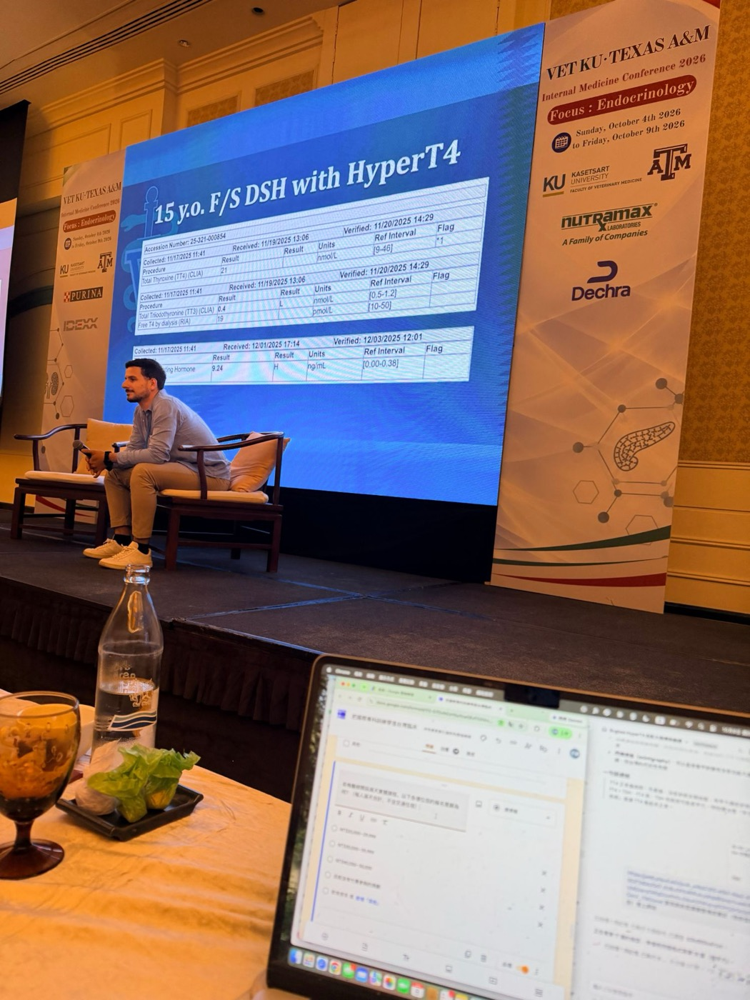
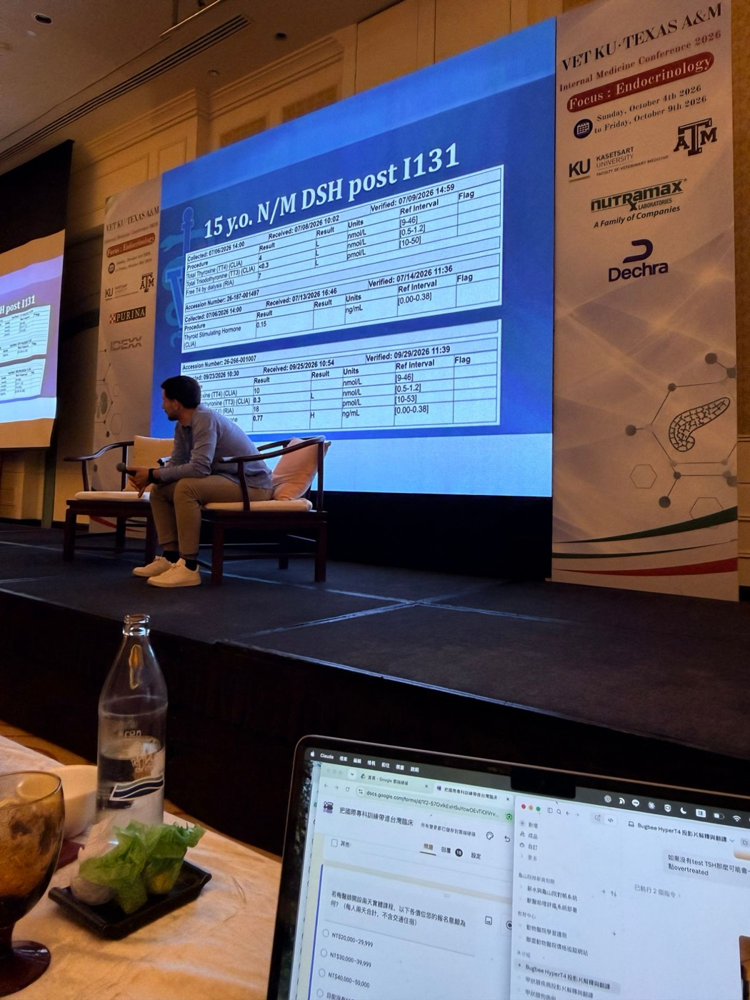
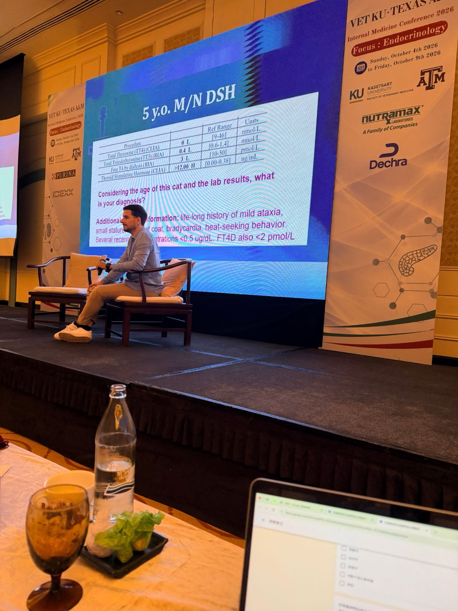

座談會 Q&A：甲狀腺與糖尿病（Panel Discussion）
座談：Daniel Langlois（MSU）、Antonio Tardo（UC Davis）、Andrew Bugbee（Texas A&M）
2026 年 10 月 8 日｜VET-KU × Texas A&M 內科研討會｜場次 19（接續 17–18 的現場提問）
🎧 座談會錄音與逐字稿（Plaud）↗
資料來源標記：
🎤 座談會逐字稿
📸 現場 現場投影片照片
✍️ 筆記 上課時記下的重點
💡 補充 整理者補充（交叉參照、判讀）
【更正】 逐字稿轉文字錯誤（完整列表見最後一節）
⭐ 必記原則
- 拿不到貓 TSH 時，高正常 TT4＋吻合的症狀可以做 methimazole 試驗性治療，但症狀要很快改善（不再掉體重、多食與 PU/PD 幾天到幾週內改善）
- 體重掉了 30% 卻只有高正常 TT4 → 先想腸胃道疾病等其他病
- 犬 TSH（Immulite）用在貓也可以；高正常 TT4＋TSH 測不到就很有說服力
- 輕微、早期的甲亢可能摸不到甲狀腺；但病情明顯卻完全摸不到 → 想到異位組織
- 甲亢貓很少因甲亢突然進入心衰竭，先控制甲狀腺，原有心臟用藥短期內不必改
- 人用 methimazole 沒問題；trilostane 要用動物用藥（複方調劑品質不穩）
- NTI：有明顯的其他疾病、激素低、TSH 正常；早期甲狀腺炎：TSH 先升高；TSH 高＋TT4 高 → 想到自體抗體干擾
- Levothyroxine 監測：TT4＋TSH，給藥後 3–6 小時採血，目標 TT4 高正常、TSH 在參考範圍下半段
- 試驗性治療：檢驗異常約 2 週改善，肥胖、被毛要好幾個月；同樣重要的是排除其他疾病
- 自體抗體在開始治療後還會存在好幾個月，持續干擾 TT4 與非透析 fT4
- I-131 後 TSH 升高、腎功能穩定 → 可以先密切追蹤；肌酸酐上升 → 補充
場次資訊與講者對照
▾- 接在 17 犬甲低（Langlois）與 18 貓甲亢（Bugbee）之後的座談會；也有人問前兩天的糖尿病議題。後半段 Langlois 秀了幾份 MSU 內分泌實驗室收到的甲狀腺報告。
講者對照（依逐字稿內容判斷）
| 逐字稿 | 講者 | 判斷依據 |
|---|---|---|
| Speaker 1 | 主持人 | 點人發問、宣布晚上的 reception |
| Speaker 2 | Daniel Langlois（MSU） | 「我們的內分泌實驗室」、秀檢驗報告；Tardo 說「as Daniel said」 |
| Speaker 4 | Antonio Tardo（UC Davis） | 被稱為 Antonio／Anthony；「我今天的課有一張胰島素轉換的投影片」 |
| Speaker 8 | Andrew Bugbee（推測） | 被問到新的 AAFP 指引時回答「我沒有參與」 |
| 其他 | 現場提問者 |
1. 拿不到貓 TSH，症狀像甲亢、TT4 卻不高
▾我們國家沒有貓最佳化 TSH。老貓症狀很像甲亢，但 TT4 沒有升高（高正常），該怎麼辦？
Langlois：
- 🎤 就像 Dr. Bugbee 說的，90–95% 的病例不需要 TSH：症狀吻合的貓，TT4 會明顯升高。
- 🎤 但他說得對，參考範圍是用健康成貓建立的。如果用 12–17 歲的貓重做，參考範圍可能會更低。
- 🎤 沒有 fT4 和 TSH 時只能盡力而為：高正常 TT4＋吻合的症狀，做 methimazole 試驗性治療並沒有錯。但症狀要真的、而且很快改善。
- 🎤 很輕微的甲亢不應該有嚴重的症狀。如果貓掉了 30% 體重，TT4 卻只是高正常，我會更擔心是腸胃道疾病或其他疾病造成的。
多快算「很快」？（Langlois）
- 🎤 看是哪個症狀：體重增加可能要幾週到幾個月，但不應該再繼續掉體重，這應該相當快。
- 🎤 多食、PU/PD 通常幾天到幾週就改善。
Tardo：
- 🎤 貓也可以用犬 TSH。商業實驗室用 Immulite 測的犬 TSH，足以協助診斷甲亢或甲低，只是不如 TruForma 敏感。
Langlois：
- 🎤 MSU 的 Immulite 也還是用犬 TSH 抗體。TruForma 可能更好，但絕大多數情況用犬 TSH 就夠了。
- 🎤 雖然偵測下限沒有 TruForma 那麼低，高正常 TT4＋TSH 被壓到偵測下限以下，我覺得相當有說服力。
補充：和 18 第 6 節的數據搭配看：單獨用犬 cTSH「測不到」來診斷，PPV 只有約 22%；但前提是高正常 TT4＋症狀都已經指向甲亢時，TSH 測不到就成為有力的支持證據。
2. 診斷甲亢一定要做甲狀腺掃描嗎？
▾（主持人）以前討論一篇論文時，有人堅持一定要有甲狀腺掃描才能診斷甲亢。症狀、TT4 升高、掃描三者都要嗎？還是兩個就夠了？
Langlois（回答聚焦在 thyroid slip）：
- 🎤 Mark Peterson 早期報告的大型病例群，幾乎每隻貓都摸得到 thyroid slip，但那些都是比較典型的甲亢。
- 🎤 現在越來越早發現，我認為大多數貓還是摸得到，但確實有一些貓摸不到甲狀腺腫。所以不會因為摸不到就排除甲亢，特別是很輕微的甲亢。
- 🎤 反過來，如果甲亢很明顯、頸部卻完全摸不到，我反而會擔心是異位組織。
Tardo：
- 🎤 對我來說，掃描是考慮下一步的依據，例如飼主想做放射碘治療或手術時。（逐字稿這段辨識不清）
3. 老貓 TT4 稍高、症狀不明顯又有很多共病，要治療嗎？
▾很老的貓 TT4 稍高，但因為已經有很多共病，症狀不明顯。需要治療，還是持續追蹤就好？
Tardo：
- 🎤 TT4 只是輕度升高、沒有症狀，我通常不治療。藥物是用來治療症狀的，沒有症狀要治療什麼？
- 🎤 唯一的例外是飼主想做根治性治療，但我還是會等到 T4 更明確升高。
- 🎤 另一個原因是前面提到的 CKD 被揭露：這種病患做放射碘後，崩潰的機率可能比較高。
Langlois：
- 🎤 同意。老貓很麻煩，因為老貓會得腸胃病，也會得內分泌病，TT4 又落在模稜兩可的區間。
- 🎤 症狀很嚴重、TT4 卻幾乎沒變 → 更擔心是原發性腸胃疾病，通常往那個方向查。
- 🎤 異常很輕微 → 像 Antonio 說的，等一段時間再驗。真的甲亢，數值會持平或慢慢上升。
4. 驗 TSH 很貴：TT4 在上半段就不會甲低嗎？
▾TSH 要外送、要花錢。文獻建議治療後把 TT4 維持在參考範圍下半段。如果治療後 TT4 在上半段，可以假設沒有造成亞臨床甲低嗎？
Langlois：
- 🎤 我認為這大致上是合理的假設。TT4 在上半段，TSH 很高的機率不大，雖然有時候會有意外的結果。
- 🎤 在你的條件下，這是很實際的做法，可能不驗 TSH 也還過得去。只是要確定貓在這個劑量下控制得好，不是仍在甲亢邊緣。
Tardo：
- 🎤 完全同意。之所以建議維持在下半段，是因為 TT4 會波動，維持低一點可以確保貓不會還是甲亢。
- 🎤 無法驗 TSH 時，就看臨床症狀、體重、肌酸酐，用院內能驗的項目做決定，這樣就可以了。
補充：反過來說，TT4 在下半段時最需要驗 TSH——第 13 節的第一份報告就是 TT4 在中段偏低、TSH 卻很高的例子。
5. 甲亢與心臟：心超時機、clopidogrel、原有用藥與高血壓
▾Dr. Bugbee 說甲亢控制後再做心臟超音波。要等多久？4–8 週還是更久？
Tardo：
- 🎤 心肌病本身就很常見，可能和甲亢無關、同時存在。也可能是甲亢拖太久，需要更長時間才會改善。
- 🎤 沒有明確的時間，我會依心臟科醫師的建議安排複查。
Langlois：
- 🎤 我們會告訴飼主（坦白說沒有科學證據）：還有心雜音或疑慮的話，在 I-131 後 1 個月和 3 個月複查；3 個月時還有心雜音就做心超。這只是剛好和回診時間對齊，不是因為證據顯示到那時應該已經恢復。
確診甲亢時已經有 HCM 表現、左心房很大，要立刻加 clopidogrel，還是等一陣子複查後再加？（怕之後發生 ATE）
Langlois：
- 🎤 一般來說，左心房真的很大，我們的心臟科會開 Plavix（clopidogrel）。
- 🎤 來做 I-131 的貓，我們常請飼主先等一下，因為一打完，貓在隔離室大約一週不會吃任何藥。所以不算緊急。
- 🎤 如果是用藥物控制、要很久才能控制，加上去大概也沒有壞處，很多心臟科醫師會這樣做。但心臟科圈內的爭議比內分泌圈多，不確定有沒有標準答案。
已經在吃心臟藥（ACE 抑制劑等），後來才診斷甲亢。開始 methimazole 時要停掉心臟藥嗎？
Langlois：
- 🎤 ACE 抑制劑對心臟病有沒有實際效果本身就有爭議，但這些藥相對溫和，短期內大概不需要改，追蹤看看即可。
- 🎤 早期甲亢研究中 50% 的貓有心雜音，很多有結構性心臟病，但真正進入充血性心衰竭的非常少。短期內不常見到貓因為甲亢突然心衰竭，所以有時間先控制甲狀腺。
確診甲亢前就已經有高血壓、在吃藥呢？methimazole 後可能出現氮血症，要先停藥嗎？
Tardo：
- 🎤 全身性高血壓可以是甲亢的表現，但不算常見；也可能是 CKD 的表現，要小心是不是正在發展 CKD。
- 🎤 我通常先開始 methimazole，再重新評估血壓；仍然高血壓就加降壓藥。
- 🎤 ACE 抑制劑對這種高血壓的效果不大。有疑慮的話，就照常給藥、治療高血壓，回診再依結果決定。
Langlois：
- 🎤 看病例而定。如果是輕到中度高血壓，我大概會停掉 ACE 抑制劑、不再繼續用。我們擔心有臨床意義的高血壓時，多半用的是 amlodipine，而不是 ACE 抑制劑。
- 🎤 多數甲亢貓沒有高血壓，有的通常也是輕到中度，短期內不太需要擔心。
6. 人用 methimazole、y/d 的低蛋白、新指引
▾動物用藥缺貨，我們改用人用藥。劑量和監測要調整嗎？
- 🎤 Langlois：人用 methimazole 已經用了幾十年，用學名藥取代動物用藥沒有什麼疑慮，多年來我們都這樣做。
- 🎤 Tardo：trilostane 不一樣。有證據顯示複方調劑的 trilostane 品質有問題，所以我只用動物用藥。
- 🎤 Langlois：完全同意。Methimazole 沒問題，trilostane 我會比較擔心。
Hill's y/d 蛋白質偏低，對肌肉分數低的甲亢貓，利大於弊嗎？
Langlois：
- 🎤 Hill's 認為它適合合併 CKD 第 1–2 期的甲亢貓，有適度的蛋白質限制，我想這大概是對的、合理的。
- 🎤 但它不是我的首選。一般的甲亢貓我多半用 methimazole 或 I-131；飼主真的想避開這兩種時，用 y/d 也可以。
- 🎤 CKD 第 3–4 期時，y/d 的限制（蛋白質、磷）可能不夠。
上一版貓甲亢共識是 2016 年 AAFP，新的什麼時候出來？
- 🎤 Langlois 以為 Bugbee 有參與；Bugbee（推測為 Speaker 8）表示沒有參與，不知道何時會出。主持人也提醒 ACVIM 共識和 AAFP 指引是不同的東西。
7. 狗：非甲狀腺疾病 vs. 早期甲狀腺炎
▾沒有 TgAA、T3AA 這些檢驗，要怎麼區分非甲狀腺疾病（euthyroid sick）和早期甲狀腺炎？
Langlois：
- 🎤 NTI 最大的特點是當下有明顯的其他疾病，甲狀腺激素可能很低。fT4 by ED 比較能抵抗這些變化，但一樣可能受影響。多數 NTI 的 TSH 維持正常。
- 🎤 很早期的甲狀腺炎，TSH 通常在激素掉出參考範圍之前就先升高。所以兩者型態不同。
- 🎤 如果有大量自體抗體，測到的 T4 可能假性偏高，但那隻狗的 TSH 會很高。TSH 高＋TT4 高，就是嚴重甲狀腺炎、自體抗體干擾的線索。NTI 的狗沒有自體抗體、TSH 不高、激素低，是兩種不同的樣貌。
- 🎤 另一個選項是 TSH 刺激試驗，但現場沒有人的國家拿得到合成 TSH（Tardo 提到泰國沒有）。
| 💡 整理 | TT4 | fT4 (ED) | TSH | 其他 |
|---|---|---|---|---|
| 非甲狀腺疾病 | ↓ | 正常或 ↓ | 正常 | 有明顯的其他疾病 |
| 早期甲狀腺炎 | 正常 | 正常 | ↑（先升） | TgAA 陽性 |
| 甲狀腺炎＋自體抗體干擾 | 假性 ↑ | ↓ | ↑ | T4AA 陽性 |
8. 狗的 levothyroxine 試驗性治療要看多久？
▾沒有可靠的實驗室驗 fT4 和 TSH。狗只有輕微的被毛問題或肥胖，懷疑甲低想做試驗性治療，要等多久看改善？
Langlois：
| 項目 | 改善時間 |
|---|---|
| 高血脂 | 約 2 週內 |
| 肝指數輕度上升 | 1–2 週 |
| 輕度貧血 | 約 2 週 |
| 精神、活動力 | 很快，但任何動物補甲狀腺素都可能變得比較有活力，不具特異性 |
| 被毛等外觀 | 好幾個月 |
| 肥胖 | 最慢，要好幾個月 |
- 🎤 想要找支持證據，就看檢驗異常有沒有相對快速改善。但這些也可能只是因為給了過多的甲狀腺素，不管狗有沒有甲低。
- 🎤 做試驗性治療時，同樣重要的是：不只要有把握牠有甲低，也要有把握牠沒有別的病。前面排除得越多，越能放心做試驗。
9. 甲低狗治療中的監測
▾甲低的監測有不同做法：驗 TT4 就好，還是整套？
Tardo：
- 🎤 我會驗 TT4 和 TSH，因為 TSH 能反映 T4 真正的生物活性。TSH 還高，可能代表 T4 還沒達到理想濃度。
- 🎤 多數情況從標準劑量開始，大多一直用同一個劑量；偶爾需要調整，沒什麼大不了。
- 🎤 也會追蹤診斷時所有的異常（膽固醇、貧血等）。1 個月第一次抽血；正常的話 3–4 個月再驗，之後至少一年兩次。
Langlois：
- 🎤 完全同意，我也喜歡 TT4＋TSH。但要記得是 SID 還是 BID 給藥，以及是不是真的在給藥後 3–6 小時採血。給藥後 10 小時和 3–6 小時的數值會差很多。
- 🎤 給藥後 3–6 小時：理想是 TT4 高正常、TSH 在參考範圍下半段。
- 🎤 給藥後 10 小時：可以接受較低的 TT4，但 TSH 不應該很高，否則代表狗有很多時間處於甲低狀態。
Tardo：
- 🎤 有趣的是，人醫只用 TSH 監測。我有些狗劑量已經很高，TSH 還是持續偏高，不知道該不該以 TSH 正常為目標。人醫的唯一目標就是 TSH 正常。
10. TgAA 很高的狗，治療後怎麼監測？
▾TgAA 很高、TSH 高，臨床上覺得是甲低，但 T4 可能假性偏高。治療後 TT4 不準，要怎麼監測？
Langlois：
- 🎤 就像我秀的那份報告（第 13 節的狗），理想上要驗 fT4 by ED。沒有的話很難，只能看其他檢驗異常。
- 🎤 很多狗自體抗體會隨時間轉陰，但需要時間。短期內就用合理的劑量、看檢驗異常有沒有改善，並避免補充過量。
- 🎤 T4 不能看，但 TSH 還是可以看。沒有 fT4 by ED 時，TT4＋TSH 一起監測是好方法。
- 🎤 不是每個自體抗體高的病患都會干擾檢驗，我不希望大家帶走這個錯誤印象。但如果有干擾，就要這樣做。
Tardo：
- 🎤 也要記得非甲狀腺疾病：過度診斷甲低最常見的原因，就是把 NTI 的狗當甲低治療。
11. 狗的年度健檢要驗 TT4 嗎？
▾狗的年度健檢，建議驗 TT4 嗎？
Langlois：
- 🎤 很好的問題，也很有爭議。TT4 便宜又容易驗，很多綜合生化套組都有。不少內分泌專家很反對，因為它似乎導致甲低過度診斷。
- 🎤 我不知道哪個對，但臨床症狀很少或沒有的動物，TT4 低不能作為甲低的診斷依據。
- 🎤 我的問題不在實驗室把它放進套組，而是我們獸醫有時候會解讀錯。結果異常時，要確實做更完整的甲狀腺檢驗。
Tardo：
- 🎤 一樣。如果要我額外加 T4，我會說不要。狗沒有症狀、也沒有懷疑腫瘤，單純篩檢沒有意義：影響 T4 的變數太多，常常會偏低，然後你得跟飼主解釋為什麼低，比驗本身還複雜。
- 🎤 但如果它在老年套組裡、驗出來異常，就照 Daniel 說的進一步檢查。
12. 狗甲狀腺區腫塊，手術前要驗甲狀腺嗎？
▾朋友的病例：狗甲狀腺區域有腫塊，超音波和 CT 都指向甲狀腺（異位甲狀腺病灶），沒有特別的症狀。手術前要驗 T4、fT4 嗎？還是直接開刀送病理？如果有甲亢或甲低，要先治療嗎？
Langlois：
- 🎤 超過 75% 的甲狀腺癌沒有功能。
- 🎤 我們通常術前和術後都會驗，因為有時候能提示術後可能發生什麼，但通常不會延後手術。
13. 現場的四份甲狀腺報告（MSU 內分泌實驗室）
▾📸 現場🎤✍️ 筆記 報告一：15 歲 F/S DSH，methimazole BID 治療中

- 🎤 實驗室被問到：methimazole 的劑量要怎麼調？TT4 21 很明確在參考範圍內，fT4 by ED 19 也是。你可能會想「劑量不用動」。
- 🎤 但內分泌醫師建議一起驗 TSH。這隻貓 TSH 非常高，代表我們其實過度治療了。這正是 Dr. Bugbee 講的，TSH 在監測上的價值。
- ✍️ 如果沒有驗 TSH，可能會一直給 methimazole，就有點 overtreated。
✍️ 筆記🎤 報告二：5 歲 F/S 混種犬，甲低、levothyroxine 治療中
| 項目 | 結果 | 參考值 |
|---|---|---|
| TT4（CLIA） | 38 | 9–52 nmol/L |
| TT3（CLIA） | 1.0 | 0.5–1.4 nmol/L |
| fT4（CLIA，非透析） | > 77 H | 5–43 pmol/L |
| TSH（CLIA） | 0.02 | 0.00–0.58 ng/mL |
| fT4 by dialysis（RIA） | 26 | 6–42 pmol/L |
- 🎤 這隻狗原本是用 fT4 by ED 低＋TSH 高診斷，診斷相當有說服力；後來用 levothyroxine 治療，實驗室接到電話詢問。
- 🎤 牠有非常嚴重的自體抗體。重點是：自體抗體不會一開始治療就神奇消失，這隻狗的抗體持續了好幾個月，所以只看 TT4 和（非透析）fT4 不是好方法，實驗室加做了平衡透析。
- 🎤 自體抗體不只讓診斷變複雜，治療後好幾個月都可能還在造成混淆。
- ✍️ Autoantibody 會干擾 CLIA。
補充：以 fT4 by ED 26（中段）和 TSH 0.02 來看，levothyroxine 劑量是適當的；如果只看 CLIA fT4 > 77，會誤以為補過量而減藥。詳細機轉見 17 第 10 節。
📸 現場🎤 報告三：15 歲 N/M DSH，I-131 後 1 個月與 3 個月

- 🎤 兩份都是在 MSU 做 I-131 的貓的監測報告。貓臨床狀況良好、沒有氮血症。重點是：這些判斷不是非黑即白。
- 🎤 1 個月：甲狀腺激素低（Langlois 口述「T3 竟然正常」，但投影片 TT3 < 0.3 偏低、TSH 0.15 正常，推測是指 TSH）。實驗室的解讀是「我們也不確定」：貓沒有氮血症、沒有症狀，也許就等待、複驗。
- 🎤 3 個月：TT4 在參考範圍最底端、T3 低、TSH 現在升高。Langlois 認為是從亞臨床正在變成臨床甲低。
3 個月這份，要治療嗎？
Tardo：
- 🎤 TSH 升高時，要檢查腎功能。如果同時肌酸酐、BUN 上升，就有治療的理由。
- 🎤 如果腎功能穩定正常，我大概會繼續追蹤，看這是不是正常的反應：TSH 升高是在刺激正常甲狀腺細胞重新製造 T4。沒有黑白分明的答案。
Langlois：
- 🎤 這隻貓要非常密切追蹤。我其實不太想馬上開始補充，因為牠可能很快恢復功能，多數貓都會。Dr. Bugbee 自己的貓就是例外，終生甲低。
- 🎤 同意 Antonio：腎功能完全正常的話，我會密切觀察，看牠能不能恢復正常甲狀腺功能。
Tardo：
- 🎤 我也有不好的經驗：一直追蹤，某個時間點腎功能變差，才想「也許早該治療」。我們總說治療對腎臟的影響是動態的，恢復後應該會回來，但我不確定。T4 長期處於異常狀態，也可能是發展 CKD 的另一個風險因子。有些病例腎功能的變化真的讓我很意外。
- 🎤 Langlois：確實會發生，我也不知道正確答案。很多病例表現不一樣，這就是內分泌的挑戰。
補充：兩次之間沒有補充，TT4 是自己回升的，TSH 從 1 個月的「還沒醒」到 3 個月升高，正是正常細胞在恢復的過程。這和 18 講的「任何 TSH 升高都要和飼主討論補充」（Peterson 2024，非氮血症貓補充也延長存活）有一點張力；座談會兩位講者的實務做法是：腎功能穩定就密切追蹤，肌酸酐上升就補。
📸 現場🎤 報告四：5 歲 M/N DSH，終生症狀的甲低貓

- 🎤 Langlois：終生體型矮小、被毛雜亂、心搏過緩，臨床上就是甲低。看這份報告，我 100% 確定是原發性甲低。
- 🎤 有趣、而我沒有答案的問題是：才 5 歲、症狀很久了，會不會是先天性的？
- 🎤 Tardo：明天（10/9）的課會講更多先天性的內容，留到那時候。→ 見 20：激素合成障礙可以是部分缺陷，症狀輕的貓能存活，有時到好幾年後才被診斷。
14. 其他：胰島素選擇與轉換、GLP-1、嗜鉻細胞瘤
▾糖尿病策略：用基礎型胰島素降低整體血糖，餐後血糖升太高時再加中效胰島素，你怎麼看？
Tardo：
- 🎤 每個病例都不同，沒有適合所有病例的最佳胰島素。
- 🎤 血糖變異度大 → 基礎型是首選。
- 🎤 胰島素阻抗，特別是大狗 → 仍會考慮 NPH。原本首選是 detemir（低劑量就能控制得很好），但現在沒有 detemir 了。阻抗時也可以用基礎型，但要有心理準備劑量會非常高，而且要搭配餐前的 bolus。
中效胰島素 BID（例如 2–3 U）控制不好，想換成基礎型 SID，劑量怎麼換？
- 🎤 Tardo：從中效 BID 換成基礎型，通常每針劑量多 30%，改成一天一次。今天的課有一張投影片整理了所有轉換規則。
投影片的規則是 +33%（無條件捨去），例：15 U q12h → 20 U q24h。詳見 16 第 9 節。
（前兩天的議題）貓要用 GLP-1 促效劑的話，怎麼用、劑量、要監測哪些副作用？
Tardo：
- 🎤 研究過的是 exenatide 長效型，但目前美國和歐洲都買不到。如果有，劑量是 200 µg/kg，每週一次。
- 🎤 適應症：降低血糖變異度。也有研究評估用來維持緩解，但用或不用 exenatide 沒有差別，所以目前唯一的適應症是降低變異度。
- 🎤 副作用：腸胃道問題、噁心，也可能延遲胃排空。
- 🎤 現在有 SGLT2 抑制劑，簡單得多、而且是動物用核准藥，可以用在同樣的適應症。
腎上腺切除時，一碰到腎上腺就出現心搏過速（短暫的上心室或心室性），術中該怎麼處理？β 阻斷劑還是 α 阻斷劑？
Langlois：
- 🎤 我不是心臟科、也不是外科，但我認為 β 阻斷少數真正的適應症之一，就是嗜鉻細胞瘤造成的心律不整。所以第一線我會給 β 阻斷，或 esmolol CRI。
- 🎤 通常是上心室性心搏過速，但嗜鉻細胞瘤也可能造成心室性心搏過速，這大概是 β 阻斷真的能治療心室性心搏過速的少數情況之一。
補充：嗜鉻細胞瘤病患要先有足夠的 α 阻斷（phenoxybenzamine）才給 β 阻斷，避免 α 作用失去抵抗而加重高血壓。術前準備見 15 內分泌腫瘤。
Take-home 與更正表
▾Take-home
| 情境 | 座談會的做法 |
|---|---|
| 老貓症狀像甲亢、TT4 高正常、沒有貓 TSH | 可用犬 TSH；或 methimazole 試驗，症狀要很快改善；體重掉很多就先查腸胃道 |
| 老貓 TT4 稍高、沒有症狀 | 不治療，等待複驗；真的甲亢會持平或上升 |
| 治療後驗不起 TSH | TT4 在上半段大致不會有亞臨床甲低；看症狀、體重、肌酸酐 |
| 甲亢合併心臟病、高血壓 | 先控制甲狀腺；原有用藥短期不必改；大左心房可考慮 clopidogrel |
| I-131 後 TSH 升高 | 腎功能穩定 → 密切追蹤；肌酸酐上升 → 補 levothyroxine |
| 甲低狗監測 | TT4＋TSH，給藥後 3–6 小時；1 個月、3–4 個月、之後一年兩次 |
| 高 TgAA 狗 | fT4 by ED 最好；沒有就 TT4＋TSH＋檢驗異常，避免補過量 |
| 狗甲狀腺腫瘤 | 術前術後都驗，但不延後手術（> 75% 沒有功能） |
更正表（逐字稿轉文字錯誤）
| 逐字稿 | 應為 |
|---|---|
| filai TFS／TAs and TSH | feline TSH／fT4 and TSH |
| leg normal height, in leg total T4 | high-normal total T4 |
| Dr. Bovim／Dr. Bugby／Dr. Bumpy／Dr. Bag | Dr. Bugbee |
| benzoal trial | methimazole trial |
| PUD | PU/PD |
| true formula／true former | TruForma |
| FIA prolongsism／a FIA | pheochromocytoma |
| cobays／voider | cohorts／goiter |
| avitaminism／troponinopathy | hyperthyroidism／cardiomyopathy |
| phenazol／methenol／thymus／metformin／tamoxadol | methimazole |
| triamcinolone（藥品品質段落） | trilostane |
| Hills Whitey | Hill's y/d |
| widening | phosphorus restriction（推測） |
| Uterine Syndrome | euthyroid sick syndrome |
| HDM／CAD／diastolic hypertension | HCM／CKD／systemic hypertension |
| copro | clopidogrel |
| suloxine／Seloxine／suloxan | Soloxine（levothyroxine） |
| monitoring of the antibodies is one of the easiest | monitoring of hypothyroidism is one of the easiest（推測） |
| azoospermia | azotemia（推測） |
| euthymic／labradorite | azotemic／hyperthyroid |
| antenatal signs | non-thyroidal illness |
| G protein／JP one | GLP-1 |
| first chance to Inhibitors | SGLT2 inhibitors |
| Dr. Ludwig | Dr. Bugbee（推測） |
| TB4／CSH | TT4／TSH |
參考資料
10/8 座談會 Q&A（Veterinary Endocrinology Panel Discussion）「完整記錄」逐字稿 PDF；VET-KU × Texas A&M IM Conference, 2026-10-08。
座談會錄音與逐字稿（Plaud）。連結（有轉文字錯誤，請對照更正表）